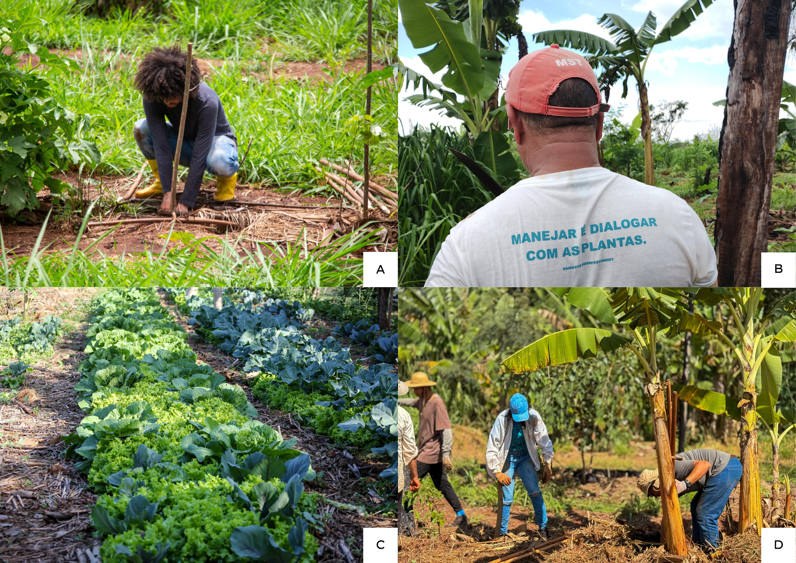
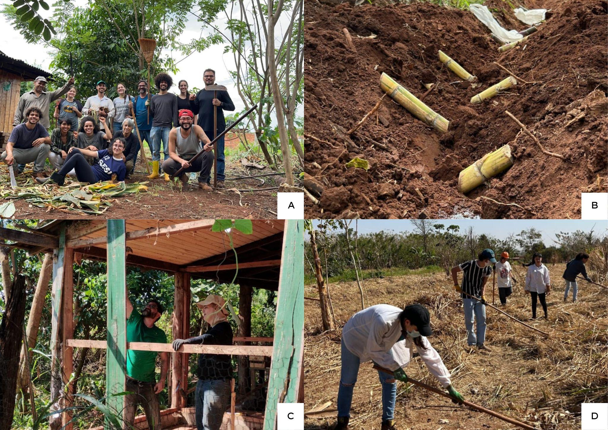
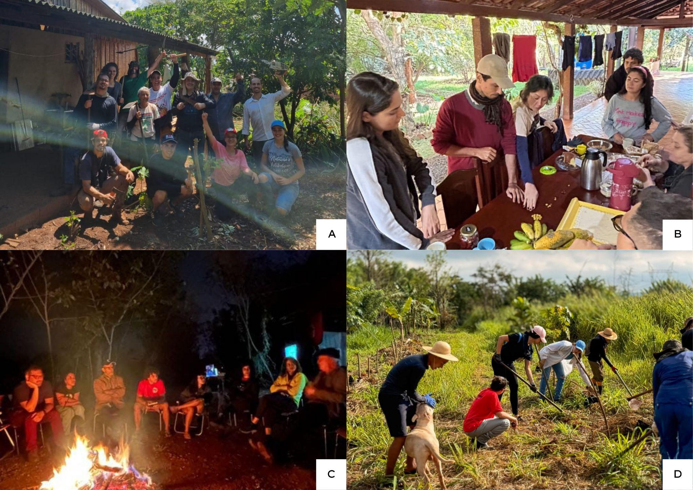

Rebrotar da terra: resiliência agroecológica no Sítio Terra Viva
Reblooming from the Soil: Agroecological Resilience at Sítio Terra Viva
RELATO DE EXPERIÊNCIA TÉCNICA
Eixo Temático 7: Construção do Conhecimento Agroecológico
Resumo
Este relato apresenta um projeto voltado à recuperação de áreas devastadas pelos incêndios criminosos de 2024 no Assentamento Mário Lago, em Ribeirão Preto (SP). A iniciativa busca restaurar a biodiversidade, integrar saberes ancestrais e acadêmicos, ações coletivas entre campo e cidade, bem como compartilhar educação, política e cultura através do Biocentro Cultural Terra Viva, espaço coletivo construído através de mutirões. O projeto mobiliza voluntários em mutirões de plantio, poda, manejo, práticas de bioconstrução, além de vivências, como oficinas de teatro e clube do livro, e formações políticas sobre ecologia marxista e políticas públicas, por exemplo. As ações evidenciam a força coletiva: quase 2 hectares foram transformados com mudas nativas e frutíferas em sistema agroflorestal agroecológico (SAFA), além do fortalecimento dos elos comunitários.
Palavras-Chave: Mutirões; Agroecologia; Oficinas.\ Keywords: Task forces; Agroecology; Workshops.\ \ Contexto
O presente relato apresenta as discussões e ações desenvolvidas no Biocentro Cultural Terra Viva, localizado no Assentamento Mário Lago, do Movimento dos Trabalhadores Rurais Sem Terra (MST), em Ribeirão Preto/SP. Trata-se de um coletivo formado por assentados, estudantes universitários e secundaristas, professores e artistas, que tem se organizado para promover ativamente a agroecologia como prática de cuidado, recuperação, educação, cultura, modo de vida e transformação social.
As iniciativas nasceram em meio ao caos provocado pelos incêndios criminosos de 2024, que devastaram grandes áreas do assentamento, consumindo casas, terras, hortas e sistemas agroflorestais (SAFAs). O que antes era verde, fértil e vivo, transformou-se em cinzas. O fogo não apenas destruiu o cultivo, como também expôs a vulnerabilidade do território e a pressão constante do agronegócio intensivo, que domina a região e prioriza a produção em larga escala em detrimento da vida, da biodiversidade e da comunidade (Freitas, 2008).
Diante de uma crise climática global, optamos por não ceder ao fatalismo (Barreto, 2024; Hernández-Díaz, 2024). Decidimos criar um território de esperança, um espaço em que não se espera passivamente pela mudança, mas onde ela é construída de forma ativa em um processo constante, acreditando que outro mundo é possível. Nesse cenário, os mutirões e encontros agroecológicos surgem como atos de resiliência e resistência. A agroecologia deixa de ser apenas um método produtivo para se tornar cuidado com a terra, aprendizado coletivo, solidariedade e construção de novos modos de viver baseados na coletividade.
Nosso coletivo se reúne semanalmente para recuperar áreas degradadas, plantar árvores e cultivar comida de verdade, integrando saberes do campo e da cidade e criando um espaço onde as pessoas e a natureza caminham juntas. A experiência mostra que a agroecologia, quando vivida e compartilhada, é capaz de refazer o que o fogo consumiu, resistir às adversidades, fortalecer a autonomia alimentar, preservar a biodiversidade e reafirmar o território como espaço de vida, cuidado e esperança. Trata-se de uma prática que aponta para a mudança concreta do futuro do planeta, construída de forma coletiva, a partir da terra.
Descrição da Experiência
A experiência aqui relatada teve início em Novembro de 2024 e, até agosto de 2025, foram 30 mutirões realizados e 3 formações educacionais no Biocentro Cultural e Agroecológico Terra Viva, no Assentamento Mário Lago, em Ribeirão Preto/SP. Hoje, já reunimos mais de 60 voluntários vindos de diversas regiões de Ribeirão Preto, de diferentes estados brasileiros e até mesmo de outros países, substancialmente da América Latina. Atualmente contamos com a constante participação ativa de 18 companheiras(os) nos Mutirões que realizamos aos domingos.
Cada mutirão é pensado como uma prática coletiva de reconstrução ambiental e fortalecimento da comunidade, articulando saberes do campo e da cidade (Figura 1). Entre as atividades realizadas, destacamos: (a) Mutirões de reflorestamento, voltados à recuperação de áreas degradadas pelos incêndios de 2024; (b) Mutirões de reforma, para criação do Núcleo Educacional e Cultural Agroecológico e manutenção de estruturas sustentáveis no sítio; (c) Mutirões de manejo agroflorestal, promovendo a diversificação e integração de cultivos; (d) Mutirões de prevenção a incêndios, visando capacitação coletiva e cuidado do território; e (e) Oficinas de contexto educacional, político e de desenvolvimento de habilidades para manutenção e utilização de ferramentas.
Figura 1: atividades realizadas em mutirões no Sítio Terra Viva. (A) Plantio de Gliricídia por estaquia; (B) Assentado com camisa estampada: "Manejar é dialogar com as plantas"; (C) Horta em sistema de SAFA; (D) Manejo agroflorestal com poda de bananeira com o intuito de prevenção de praga, conhecida como 'Broca' ou 'moleque da bananeira' .

Fonte: autoria própria, 2025.
As metodologias escolhidas, através de ações práticas, coletivas e semanais, refletem a filosofia do coletivo: aprender fazendo, em diálogo com a natureza e entre as pessoas, fortalecendo vínculos e construindo redes de solidariedade. Além de reunir agricultores, assentados, estudantes, professores e moradores da cidade, a iniciativa passou a promover trocas de experiências entre o assentamento e a USP Ribeirão Preto, aproximando práticas agroecológicas de processos de pesquisa, ensino e extensão universitária.
Figura 2: atividades realizadas em mutirões no Sítio Terra Viva. (A) Mutirão de manejo preventivo de incêndio; (B) Plantio de múltiplas espécies de cana crioula; © Aula sobre tipos de café; (D) Mutirão de manejo.

Fonte: autoria própria, 2025.
A integração com outras ações e coletivos em atividade é uma teia de compartilhamentos de grande valor, também instituído em nosso plano e direcionamento de ações coletivas. Além da integração com outros coletivos, como Tá com calor? Plante árvores, Dançando com o clima, Centro de Formação Sócio Agrícola Dom Hélder Câmara e Educação do campo USP. Também participamos ativamente da construção do Espaço Agroecológico Afromeríndio na USP-RP, onde implementamos um canteiro de ervas medicinais. A escolha dessas ervas e a construção do espaço se dá a partir de conhecimentos agroecológicos e conhecimentos de matriz africana e indígena. O intuito deste espaço é construir um local coletivo de difusão e compartilhamento dos saberes populares e ancestrais, visando uma integração entre a universidade e a comunidade local.
Cada mutirão, oficina, formação e as atividades integradoras com outras entidades e coletivos seguem uma programação que integra momentos de convivência, diversidade, cuidado, carinho e comunitarismo, promovendo trocas de conhecimento e saberes coletivos, diálogo e fortalecimento da agroecologia e da vida.
Figura 3: atividades realizadas em mutirões no Sítio Terra Viva. (A) Foto 1 do grupo de mutirão em bioconstrução; (B) Plantio de múltiplas espécies de cana crioula; (C) Formação sobre ecologia marxista; (D) Mutirão de bioconstrução .

Fonte: autoria própria, 2025.
Resultados
Entre novembro de 2024 e julho de 2025,nossas ações resultaram na recuperação de áreas degradadas, com o plantio de centenas de árvores nativas, a diversificação de cultivos agroecológicos, a implantação de práticas de prevenção a incêndios, a construção de estruturas e ferramentas sustentáveis por meio da bioconstrução e de um Centro Educacional e Cultural de Agroecologia.
Mais do que resultados materiais, a experiência gerou trocas constantes entre o assentamento e a universidade, permitindo formação prática, construção coletiva de conhecimento e fortalecimento das redes locais. O Sítio Terra Viva consolidou-se como ponto de encontro entre diferentes saberes e experiências, aproximando campo e cidade e fortalecendo a resiliência social e ambiental diante da crise climática e da pressão do modelo agroindustrial.
Os objetivos iniciais - reconstruir áreas afetadas pelo fogo, promover a agroecologia como prática de cuidado e fortalecer a comunidade - foram alcançados e ampliados. O trabalho demonstra que a recuperação ambiental pode caminhar junto com a formação política e técnica, gerando engajamento e novas lideranças, especialmente entre jovens e mulheres.
A experiência se apresenta, assim, como um exemplo concreto de resistência e união, mostrando que a agroecologia é capaz de reconstruir territórios, relações e possibilidades de vida, afirmando-se como estratégia de transformação social. Os principais desafios permanecem: a continuidade do engajamento, a limitação de recursos e a ameaça de novos incêndios. Ainda assim, a experiência do nosso coletivo demonstra que reconstruir coletivamente não é apenas possível, mas necessário, apontando caminhos para novas formas de habitar e cuidar da terra.
Referências bibliográficas
BARRETO, Eduardo Sá. Capitalismo catástrofe e o fatalismo à espreita. Argumentum, v. 16, n. 3, p. 8-22, 2024.
FREITAS, Elisa Pinheiro de. Agricultura camponesa no território do agronegócio: um estudo sobre os sem terra de Serra Azul e Ribeirão Preto (SP). 2008. Tese de Doutorado. Universidade de São Paulo.
HERNÁNDEZ-DÍAZ, Nicolás. ¿ Qué hacer con el catastrofismo? Anulación y organización del pesimismo en el tiempo de la catástrofe ecológica y climática. 2024.